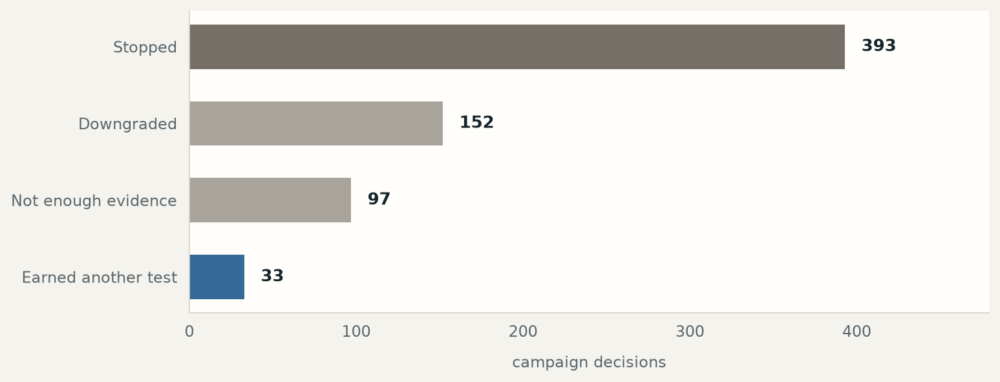
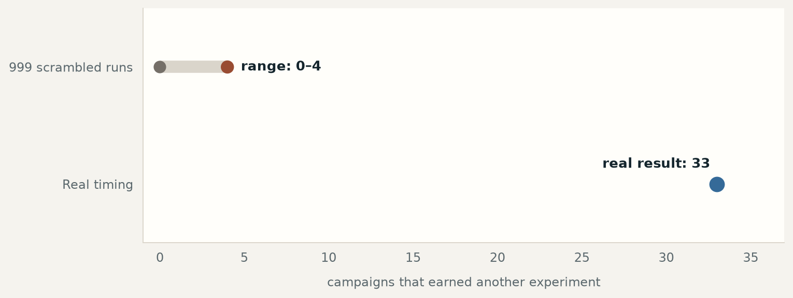

Marketing measurement · plan written in advance · public dataset
Late-arriving conversions made reported cost per customer look about 4× too low.
A public-benchmark study of conversions credited after the budget decision.
I used a public Criteo advertising dataset to test whether late-arriving conversions could make an old report look better than the evidence available at the time. I wrote the test plan before looking at the result.
The 60.3% is a follow-up description, not part of the original plan: it is the share of test budget behind campaigns that failed the timing check.
The finding
Campaigns with late-arriving credit looked about 4× cheaper than they were.
The median gap was 297%, and the planned check on data held back from the analysis improved by 50.8%. I selected 25 campaigns after the study because they had the most late-arriving conversions; that description was chosen after the fact and is not a typical result across all 675 campaigns.
285
campaigns that looked good at first
118
after the time gate
60.3%
of the test budget was behind campaigns that failed the timing check
33
next candidates
The problem
A conversion recorded today may belong to last week's budget decision.
Nothing necessarily broke in tracking. A report can receive a conversion after the budget decision and file that credit into the older campaign story. That timing gap is where the problem hides: the campaign looks stronger than the evidence available when the decision was made.
This study measures that gap directly on a dataset anyone can download.
The human work is choosing the cutoff, writing the rule down before seeing the result, and deciding what the evidence allows next.
What the report knew at the decision point
39%of the credit was visible when the budget decision was made
61%arrived later and changed the old campaign report
How the correction works
Score the old report, rebuild the decision-time view, then choose what deserves another test.
167 dropped outThey only looked good after late-arriving credit was added. Another 85 did not clear the next-test bar.
The finding
The leak is real, it is large, and it is not random noise.
CHECK 1 · PLANNED IN ADVANCE
A placebo run finds almost nothing.
We scrambled the timing and re-ran the same check 20 times. The scrambled runs produced a median of 0 candidates and never more than 1. The real timing produced 33.
CHECK 2 · CONFIRMED AT LARGER SCALE
A second, larger placebo agrees.
Across 999 scrambled runs, the median was 0 and the maximum was 4. None matched or exceeded the real result (p = 0.001).

What changes
A correction matters only if it changes the next budget decision.
The real test of a correction is whether it changes what you would have done. On public-benchmark data held back from the analysis, the first rule selects 274 campaigns at a cost per customer of 0.01782. The corrected rule selects a different, smaller set: 99 campaigns at 0.00877, a 50.8% improvement in this benchmark comparison, not proof of live campaign lift.
One anonymous campaign reports a cost per customer of 0.00828 before the correction and 0.05076 after: a 6.1× difference caused by 431 late-arriving credits. These are the benchmark's own units, not dollars. The source identifier stays in the receipt for auditability.
Two implementation bugs were caught before the result was treated as evidence. One check was first compared against the wrong baseline, and a second miscounted which campaigns belonged in the test group. Both were fixed, everything downstream was re-run, and the original plan stayed intact.
A question for your own reports
Does this happen in your account?
Probably, and it is not anyone's fault. Many ad platforms backfill conversions into the day of the click, not the day the conversion occurred. That is the right choice for understanding history and the wrong one for judging a decision you already made.
01
Pull the same report twice. Once today, once from a snapshot 30 days ago. If the older numbers have changed, you have the problem.
02
Check your click-to-conversion lag. Anything longer than your reporting cycle is the size of your blind spot.
03
Replay your last budget decision. Ask what it would have looked like using only the data that existed the morning you made it.
Supporting evidence
Read the evidence as a set, not a hero chart.
The finding above rests on more than one chart. This is the placebo run referenced in The finding: the test that had to come back empty for the result to mean anything.

Evidence receipt
The complete benchmark ledger, for readers who want the audit trail.
Open the measurement receipt
Every value here is generated from the public benchmark receipt. Nothing is redacted, because the underlying data is already public. The public page shows the checked summary; the raw working record remains private.
The attribution-credit count is grouped by campaign-day cohort; it is not a count of unique customers or revenue.
The claim
The first figures describe what changed: candidates before and after the time gate, the decision ledger, and the registered out-of-sample comparison.
The checks
The next figures test leakage, attribution-model sensitivity, placebo behavior, and weekly stability.
The scale
The final figures describe volume, cohort coverage, and the worked example. Units stay with each value below.
285
naive candidates
118
corrected candidates
33
next candidates
9,979
held-out cohorts
8,730
leakage cohorts
87.5%
leakage rate
189,430
future-dated attribution credits
39%
credit at gate
61%
credit after gate
60.3%
naive-candidate spend rejected by the time check
393
kill verdicts
152
demote verdicts
97
insufficient verdicts
33
promote verdicts
274
naive OOS selected
99
corrected OOS selected
0.01782
naive OOS CPA
0.00877
corrected OOS CPA
50.8%
OOS improvement
0.01671
naive rule CPA
0.00839
corrected rule CPA
49.8%
CPA improvement
20
placebo permutations
33
placebo observed
0
placebo median
1
placebo max
0
placebo at or above
999
confirmatory permutations
0
confirmatory median
4
confirmatory max
0
confirmatory at or above
0.001
confirmatory p
100
last-click rows
81
multi-touch rows
45
attribution flips
530
raw FDR
480
BH FDR
93
positive weeks
473
negative weeks
86
mixed weeks
88.4%
week-one agreement
0.00746
low volume floor
0.00204
high volume floor
2.62
impression ratio
1.27
CTR ratio
0.16
CPA ratio
77.3%
volume percentile
2,576,437
example campaign
0.00828
example naive CPA
0.05076
example corrected CPA
6.1
example multiple
431
example leaked
297%
median CPA inflation
What it took
The result only became useful after two uncomfortable checks.
The public benchmark made the question reproducible, but it also made every denominator visible.
Late credit changed the apparent answer, and the first weekly prediction written before analysis did not fully match the result.
I would state every denominator and caveat in the first layer, before asking a reader to trust the headline.
The claim is not just the 4× gap; it is a measured answer that survived timing, model, placebo, and stability checks.
Method & audit trail
The full method and evidence trail live on a separate page.
This page stays readable as a summary. The method page carries the plan written before analysis and five supporting charts, the credit-assignment and stability checks, and a clear boundary around this public-benchmark study. The source write-up remains separate from this portfolio page, and publication remains gated until the final source-release, redaction, and licensing checks pass.
If this sounds like your problem too
Find the leak.
This is the closest match to my day job. I’d rather find the leak in your data than in someone else’s.